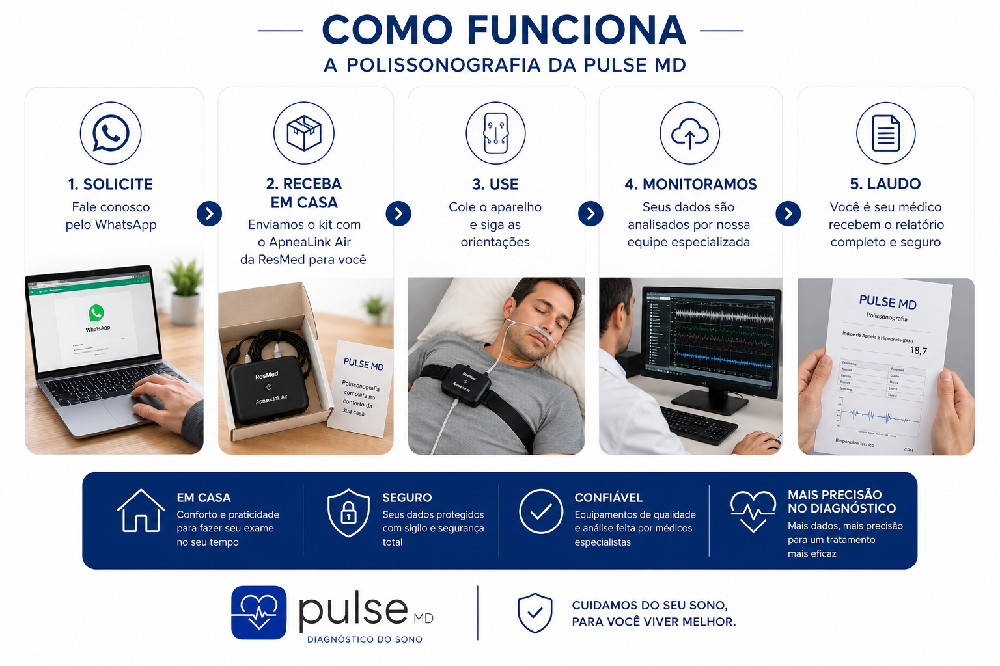
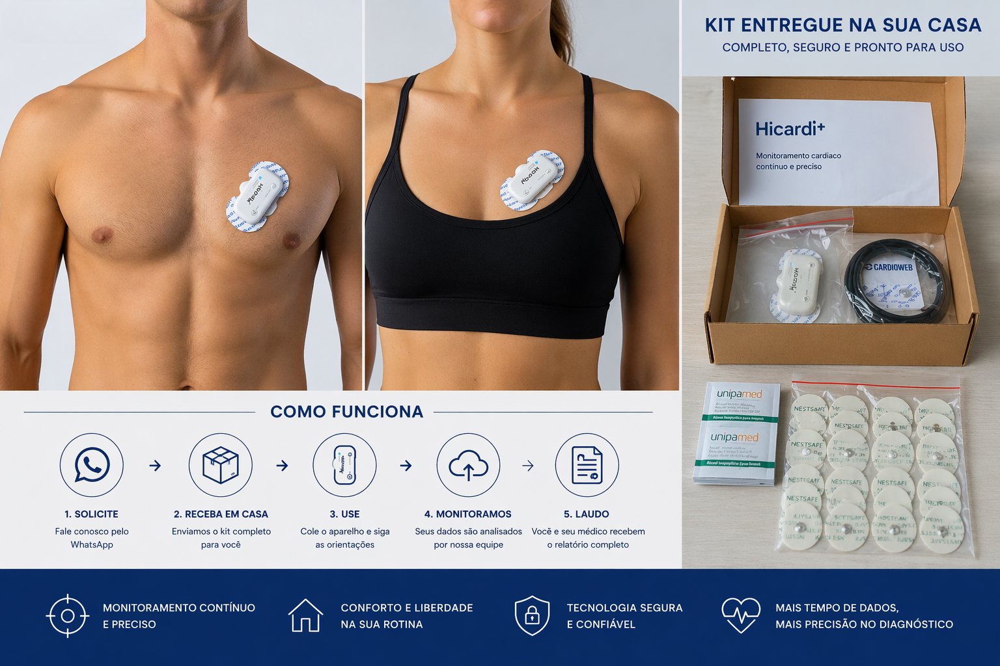
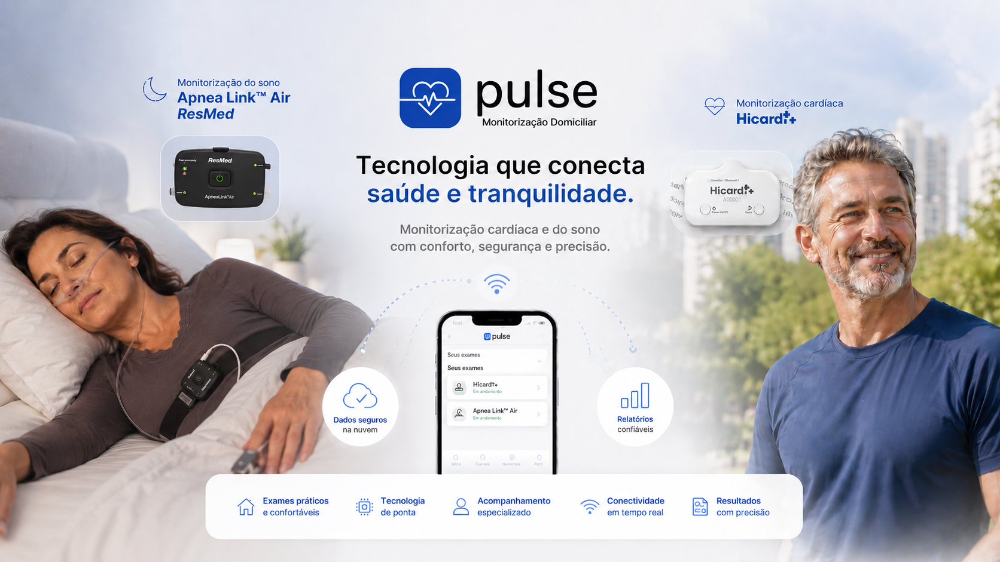

Como funciona · coração e sono
A PulseMD foi criada para tornar exames especializados mais acessíveis, permitindo que pacientes realizem monitorizações cardíacas e do sono no ambiente onde vivem, trabalham e dormem.
A PulseMD realiza monitorização cardíaca prolongada, com registro contínuo de até 7 dias e telemetria em tempo real, e polissonografia domiciliar para investigação de apneia do sono. O paciente faz o exame na própria casa, mantendo a rotina e o sono habituais, com acompanhamento de especialistas durante todo o período. O laudo é elaborado por médico especialista e entregue em até 7 dias úteis, com atendimento em todo o Brasil.
01 · Etapas
Tudo começa com um contato rápido pelo WhatsApp. Nossa equipe realiza o atendimento inicial e envia um orçamento de acordo com a sua cidade, em todo o Brasil.
Após a confirmação, você recebe o equipamento indicado para o exame solicitado, acompanhado de suporte especializado e instruções completas para uma instalação simples.
Durante a monitorização cardíaca, o dispositivo envia informações continuamente para uma plataforma segura, permitindo acompanhamento especializado durante todo o período do exame.
Um especialista acompanha todo o processo, cuidando da qualidade dos dados coletados. Ao final, seu exame é avaliado por um médico especialista e o laudo é entregue em até 7 dias úteis.
02 · Cada exame
A polissonografia domiciliar avalia parâmetros respiratórios, oxigenação, frequência cardíaca e outros indicadores importantes durante uma noite completa de sono, no ambiente habitual do paciente.


03 · Instalação
Veja como a instalação é simples e pode ser realizada em poucos minutos, com orientação da nossa equipe sempre que necessário. Assista ao vídeo e veja como funciona na prática.

04 · Na sua rotina
Realizar o exame em casa proporciona muito mais conforto e permite registrar situações reais do seu dia e da noite. Isso melhora significativamente a representatividade clínica das informações obtidas, auxiliando em uma avaliação mais completa.
05 · Soluções
06 · Confiança
07 · Cobertura
Nosso atendimento domiciliar já está disponível em todo o Brasil, do Sul ao Norte do país.
Consulte a disponibilidade e o prazo para a sua cidade através do nosso atendimento.
Avaliações no Google · ver perfilNossa equipe ajuda a identificar qual exame pode ser mais adequado para sua situação clínica.